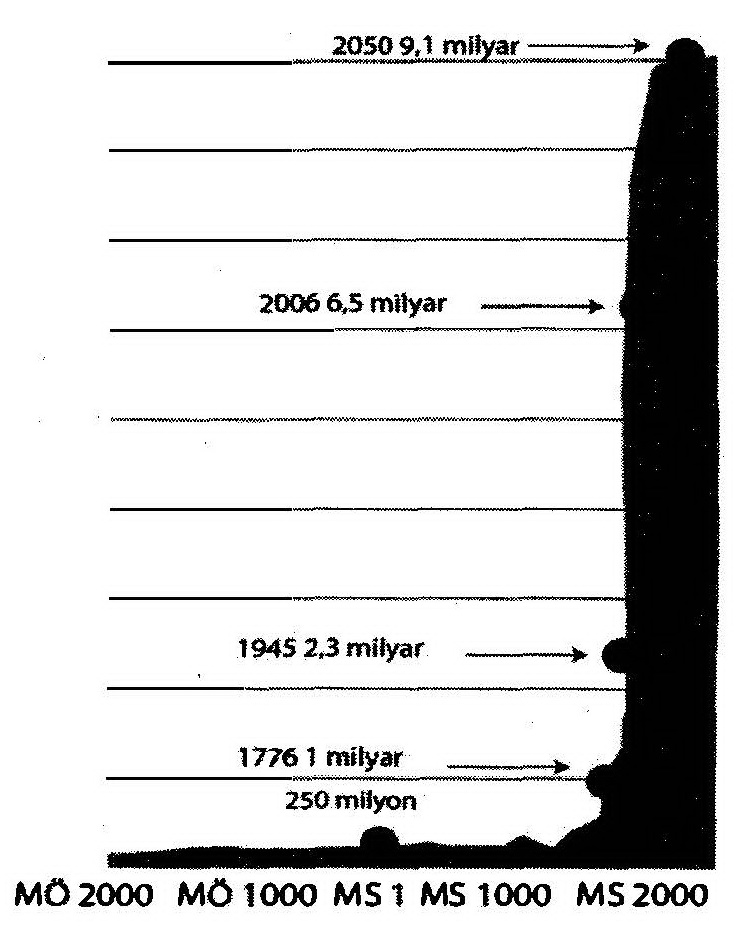

Her şey aklıma gelirdi de ülkemde, sezaryenin yani Latince adıyla sectio caesarea’nın bir başbakanın ağzında bir cinayet aleti olarak dile getirileceği gelmezdi. Roma Hukuku bile, yaşamı tehlike altında olan anneye sezaryen yapılmasını mecbur kılmıştı (Bu maddenin Roma’nın Krallık Dönemine kadar uzandığı sanılmaktadır, yani MÖ 6. Yüzyıl’a!). Bu yöntem, Sezar’ın anne karnından kesilerek çıkarıldığı efsanesine dayanarak meşhur Romalı devlet adamı ve Amiral Büyük Plinius’un (M.S. 23- 25 Ağustos 79) Doğa Tarihi (Historia Naturalis) kitabında dahi dile gelmiştir. (Sezeryanın Hindistan’da MÖ 6. Yüzyıl’da yapıldığı söylenmektedir) .
Sezaryen bir hayat kurtarma tekniğidir. Sayın Başbakan belli ki bunu bildiği halde, sezaryeni istismar ederek kürtajı da yasaklamak niyetindedir. Bundaki görünür amacı, Türkiye’de nüfus artışındaki azalma eğiliminin önüne geçmektir. Tabiî bunu yaparken çiğnediği kadın hakları falan umurunda değildir. Sözüm ona bebeğin yaşam hakkından bahsederken ise, yaşayan bebeği embriyo ile fetüsten ayıramadığı gibi, fetüsün ne derece yaşayan bir insan addedilebileceğini ise öğrenip gelmiş değildir. Konuştuğu konular tabipleri ve zoologları ilgilendirir. Çok bilgi almak istiyorsa adam gibi bir tabibe veya zooloğa başvurmalıydı.
Ama Tayyip Bey’in işlediği insanlık suçlarının en büyüğü kadın haklarını ayaklar altına almak değildir; insanlığın yaşam hakkına saldırıdır. Bunu nereden çıkartıyorsun diyecekseniz, aşağıdaki eğriye bir göz atınız.{6} Eğer bu eğri sizi dehşete düşürmediyse Tayyip Bey ve dünyada onun kafasındakilere (meselâ ABD’de kendilerine pro-life diyen zır cahil bir güruhu oluşturan kesime) oy vermeye ve meselâ torunlarınızın bir dünya cehenneminde yaşamasına çanak tutmaya devam edebilirsiniz.

Şekil 3 Al Gore Eğrisi
Dünya nüfusunun giderek hızlanan bir tempoyla artması ve artan nüfusun ezici çoğunluğunun Türk halkı gibi cahil halklardan gelmesi şu anda insanlığın en büyük sorunudur. Bu soruna bigâne kalabilecek kadar dünyadan bihaber bir politikacının bir ülkenin oyunun % 50’sini alarak onun lideri olabilmesi ise kelimenin tam anlamıyla dehşet vericidir. Böyle bir şeyin olabildiği bir ülkeden her şey beklenir. Onun için sizleri ne kadın cinayetleri, ne hukukun tar-ü-mâr olmuş olması, ne çevrenin ve tarihsel mirasın yağmalanması, ne eğitimin dibe vurmuş olması, ne ulusal borcun artık çuvalına sığmayacak hale gelmiş olması, ne doğru olamayacağı bilimsel olarak ispatlanmış bir inanç sistemiyle dalga geçti diye bir sanatçının hapis isteği ile mahkemeye celp edilmesi ve ülkemizde meydana gelen ve uygar bir insanın tüylerini diken diken edecek daha nice şeyler hayrete düşürsün. Asıl hayret edilecek olan, bu bilgisizlik düzeyiyle yönetilen bir ohlokraside bunların bu kadar az olmasıdır. O da tabiî Atatürk'ün kurduğu ve çökmekte olan uygar düzenin kalıntılarının eseridir. Ama Atatürk'ün uygarlığının izleri silinip ohlokrasi düzeni sürdükçe artacaklarından emin olunuz.